✈スケジュール
①名物と名所を落とさない ②毎食を名店で固定し、休業時の代替も店名で持つ ③移動費は安く（高速は北部往復だけ）。
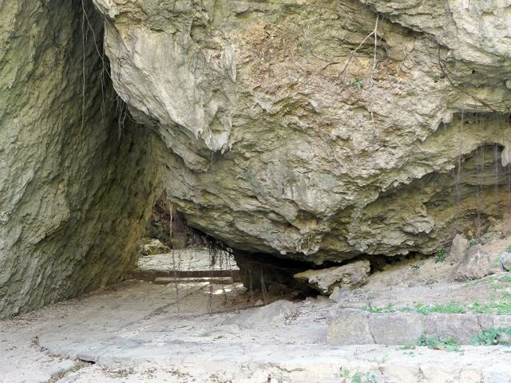
Day0 土 夜着 → 沖縄流「シメステーキ」で開幕 ／
Day1 日 北部（万座毛・備瀬・きしもと食堂・美ら海・今帰仁・古宇利の夕日・もとぶ牛）／
Day2 月 那覇＆南部（いゆまち朝食・首里城・首里そば・奥武島天ぷら・斎場御嶽・浜辺の茶屋・瀬長島の夕日・琉球料理 美榮）／
Day3 火 中部（中城城・海中道路・浜比嘉・キングタコス・アメリカンビレッジ・ジャッキーで締め → 20:40便）
曜日でズレる休業（旅程はこれを避けて組んであります）
10/25(日)＝第4日曜：第一牧志公設市場・首里そば・高江洲そば・ゆうなんぎい・88Jr.松山 が休み。国際通りは12〜18時 歩行者天国。
10/26(月)：御殿山・ぬちがふぅ・千日ぜんざい・山原そば・大城てんぷら が休み。浜辺の茶屋は14時開店。
10/27(火)：C&C BREAKFAST・御殿山・山原そば・大城てんぷら が休み。
首里城「正殿」の内部公開は 11/23〜。今回は復元された正殿の外観と城郭を見ます。
10/25(日)＝第4日曜：第一牧志公設市場・首里そば・高江洲そば・ゆうなんぎい・88Jr.松山 が休み。国際通りは12〜18時 歩行者天国。
10/26(月)：御殿山・ぬちがふぅ・千日ぜんざい・山原そば・大城てんぷら が休み。浜辺の茶屋は14時開店。
10/27(火)：C&C BREAKFAST・御殿山・山原そば・大城てんぷら が休み。
首里城「正殿」の内部公開は 11/23〜。今回は復元された正殿の外観と城郭を見ます。
00SAT
2026.10.24 (土)
羽田 → 那覇 → 沖縄流「シメステーキ」
22:50着。レンタカーを受け取ってホテルへ。徒歩5分のステーキで乾杯
▼
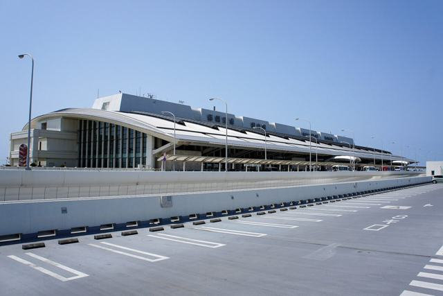
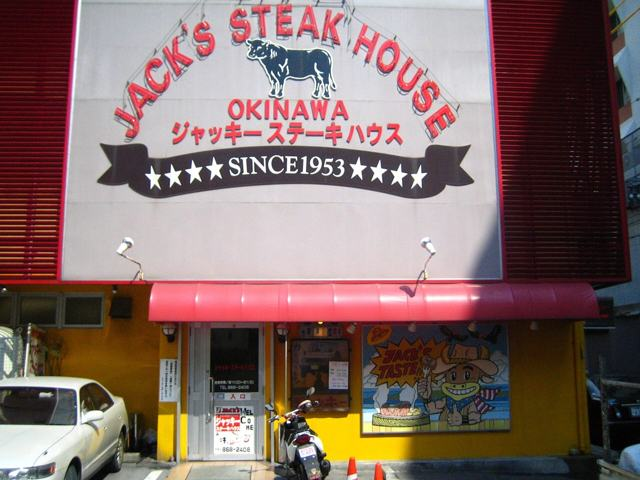
18:30
羽田空港 第2ターミナル 到着
保安検査は出発20分前まで。土曜夜は混むので1時間半前に。夕食は羽田で軽く。
20:15
ANA NH479 羽田 → 那覇 22:50
2時間35分・¥15,353。代替 ソラシド SNA25 19:10→21:55／スカイマーク SKY523 18:50→21:50（安い日はこちら）
23:00
ABCレンタカー 送迎バスで営業所へ（約8分）
到着ロビーで電話→送迎。時間外受取（20:00〜23:30着便）＋¥3,300。ETCカードも借りる。
お金優先なら ゆいレール（23:30最終）で県庁前→徒歩9分。翌朝ゆいレールで空港へ戻り8:00受取（¥3,300節約・朝1時間ロス）
23:35
スマイルホテル那覇シティリゾート チェックイン 予約済
那覇市久米2-32-1（☎098-869-2511）。到着予定15:00で予約しているので、「23:30頃到着」を事前に電話（2時間以上遅れる場合は要連絡の規定）。駐車場は先着86台 ¥1,000/泊。
23:50
夜食：ステーキハウス88Jr. 松山店（徒歩5分・土曜は翌5:00まで）
沖縄の夜の締めは「ステーキ」が流儀。1,000円ステーキをシェア。疲れていればローソン限定「ポーク玉子おにぎり」で沖縄気分だけ。
01SUN
2026.10.25 (日)
北部一周：万座毛 → 備瀬 → きしもと食堂 → 美ら海 → 今帰仁 → 古宇利の夕日 → もとぶ牛
一番遠い日を最初に。日曜は名店が混むので「開店直後」を狙う
▼
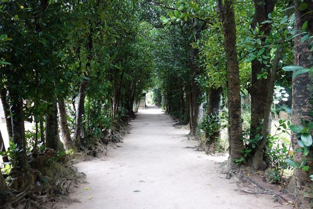
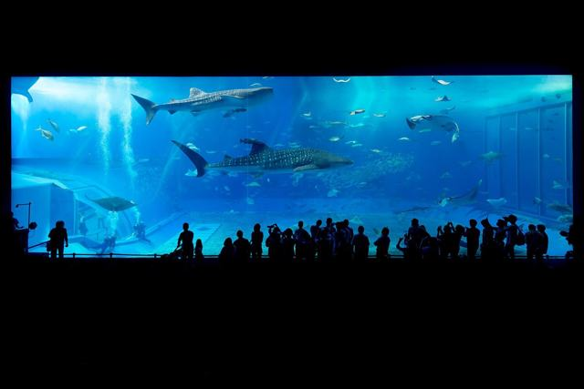
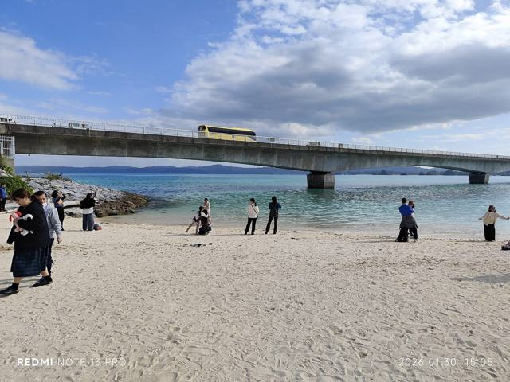
7:00
ホテル出発（那覇IC → 屋嘉IC）
日曜早朝は渋滞なし。コンビニでコーヒーだけ。
8:00
万座毛 名所
8:00開門・入場無料・駐車無料。象の鼻の断崖と朝の海。30分。
9:05
道の駅 許田（8:30〜）朝ごはん 名物
三矢本舗の揚げたてサーターアンダギー、沖縄天ぷら、カットパイン、シークヮーサージュース。美ら海の割引前売券もここで。25分。
10:00
備瀬のフクギ並木
午前の木漏れ日が一番きれい。集落を歩いて海まで40分。駐車は集落入口（¥500前後）。
10:50
きしもと食堂 本店（11:00開店） 名物
明治38年創業、木灰汁で打つ麺の元祖・本部そば。開店10分前に並ぶ。ソーキそば＋じゅーしー。
山原そば（本部・11:30〜売切／月火休）／きしもと食堂 八重岳店（席が多く待ちが短い）
12:15
沖縄美ら海水族館 名所
8:30〜18:30（入館〜17:30）大人¥2,180。黒潮の海・ジンベエザメ、15:00の給餌解説に合わせて滞在。オキちゃん劇場（イルカ）は無料。3時間。
15:35
新垣ぜんざい屋（本部・渡久地） 名物
創業70年・氷ぜんざい¥300一択。12:00〜18:00、月曜休なので日曜の今日が唯一のチャンス。
16:10
今帰仁城跡（世界遺産）
8:00〜18:00（最終入城17:30）¥1,000。曲線の石垣と海の眺め。45分。
17:15
古宇利大橋 → 古宇利島 → 橋のたもとで夕日 名所
橋は無料。ハートロック（ティーヌ浜）は駐車¥300〜。17:53の日没は古宇利ビーチ（橋の南詰）から橋越しに。
18:40
焼肉もとぶ牧場 もとぶ店 名物 要予約
牧場直営の「もとぶ牛」。17:00〜22:00 年中無休。☎0980-51-6777／ネット予約可。上カルビ・イチボ・もとぶ牛にぎり。
焼肉もとぶ牧場 名護店（帰路上）／那覇に戻って うりずん（〜24:00 無休）
20:15
許田IC → 那覇 帰着 22:00頃
飲まない方が運転（検問が多い）。
02MON
2026.10.26 (月)
那覇 ＆ 南部：いゆまち朝食 → 首里城 → 首里そば → 奥武島の天ぷら → 斎場御嶽 → 浜辺の茶屋 → 瀬長島の夕日 → 琉球料理 美榮
王朝と聖地、海カフェと飛行機の夕日。夜は予約席の琉球料理でしっかり
▼
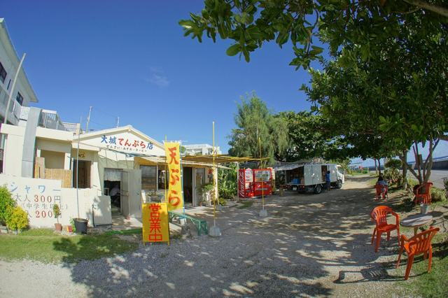
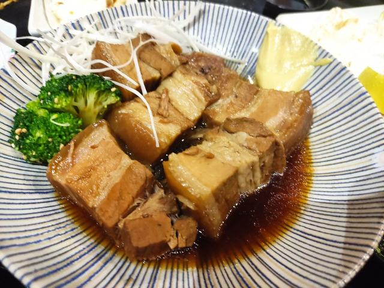
7:40
泊いゆまち（泊漁港の魚市場）で朝ごはん 名物
ホテルから車10分。6:00〜18:00・施設は無休。まぐろ丼・海鮮丼（¥1,000前後）、海ぶどう、もずく。テラスで。
9:00
首里城公園（世界遺産・守礼門〜正殿） 名所
8:00〜19:00（有料区域 ¥600）。復元なった正殿の外観と朱色の城郭、東のアザナからの那覇一望。1時間30分。県営駐車場 ¥320/2h。
10:40
玉陵 → 金城町石畳道（時間があれば）
王家の墓（¥300・20分）。石畳道は守礼門から徒歩5分、琉球王国の道を下って上る30分。
11:15
首里そば 本店（11:30開店） 名物
透明なスープと手打ち麺、那覇の「そばの王道」。11:30〜14:00 売切終了、木・日休。開店15分前に並ぶ。
田舎 公設市場南店（ソーキそば¥500・無休）／しむじょう（首里・古民家・火水休）
13:00
奥武島 中本鮮魚てんぷら店 名物
首里から35分。3代続く「沖縄天ぷら」の代表格。魚・イカ・もずく天 各¥100前後を橋のたもとで。木曜休。4〜5個をシェア。
14:00
斎場御嶽（せーふぁうたき・世界遺産） 名所
9:00〜18:00（販売17:15まで）¥600。チケットは南城市地域物産館で買ってから徒歩10分。三庫理から久高島を望む。1時間。
15:15
知念岬公園 → ニライカナイ橋
知念岬は無料P・太平洋の展望（20分）。ニライカナイ橋は橋の上の展望台から（駐車場なし・路肩に短時間）。
16:00
浜辺の茶屋（月曜は14:00〜） 名物
波打ち際の窓席、沖縄カフェの元祖。満潮なら窓の下が海。50分。
カフェくるくま（無休・〜19:00）／山の茶屋 楽水（同経営・森側）
17:30
瀬長島ウミカジテラス：夕日と着陸機 名所
那覇空港の滑走路延長線上。17:52の日没と頭上を降りてくる飛行機。夜景になるまで1時間。
19:00
ホテルへ戻り、車を置く
ここからは徒歩。
19:30
琉球料理 美榮（みえ） 名物 要予約
1958年創業、正統の琉球料理を古い屋敷の個室でコースで。18:00〜22:00、日休・不定休、☎098-867-1356 予約必須。9品¥7,000／11品¥9,000／13品¥12,000。ホテルから徒歩8分。
うりずん（安里・〜24:00 無休・古酒とラフテー）／琉音（久米・徒歩3分・山本彩香の後継・最終入店19:00・要確認）
21:30
国際通り 夜さんぽ → 2軒目
御菓子御殿・新垣ちんすこう・ブルーシールで寄り道。もう一杯なら 泡盛倉庫（県庁前・800種）か カラカラとちぶぐゎ〜（久茂地）。
03TUE
2026.10.27 (火)
中部：ポーたま → 中城城 → 海中道路 → 浜比嘉島 → キングタコス → アメリカンビレッジ → ジャッキーで締め → 20:55便
海の上を走る道と米軍文化の街。最後は1953年創業のステーキ
▼
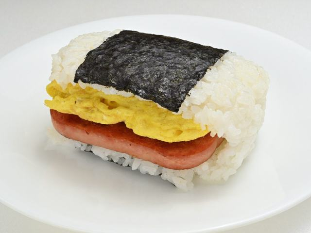
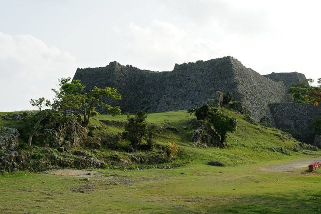
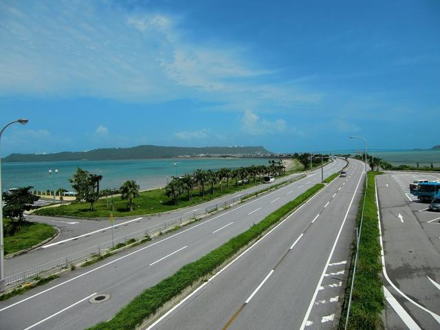
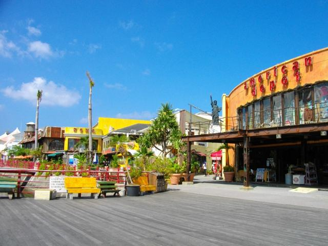
6:50
波の上ビーチ 朝さんぽ（徒歩7分）
波上宮の崖の下、那覇唯一のビーチ。20分。
7:20
ポーたま 牧志市場本店（7:00〜） 名物
ポーク玉子おにぎりの本家。油みそ・ゴーヤ天など。チェックアウト前に車で5分。
8:00
チェックアウト → 330号を北へ
荷物は車へ。平日朝の330号は混むので8時発。
8:40
中城城跡（世界遺産）
8:30〜17:00 ¥400 無休。ペリーも絶賛したアーチ門、東西に海。45分。
10:00
海中道路 → 海の駅あやはし館 名所
全長4.7km、両側が海のドライブ。
10:30
浜比嘉島：シルミチュー・浜集落 → 果報バンタ
琉球開闢の神話の島（45分）。時間があれば宮城島の果報バンタ（絶景の崖・無料・ぬちまーす工場隣、＋40分）。
12:00
キングタコス 金武本店 名物
浜比嘉から35分。タコライス発祥の系譜、山盛りの「タコライスチーズ野菜」。平日11:30〜翌5:00 無休。
高江洲そば（浦添・ゆし豆腐そば・日休）
13:00
御菓子御殿 恩納村本店 → 読谷 やちむんの里（時間があれば）
紅いもタルトの製造見学とお土産。やちむんの里は登り窯と工房（火曜休の工房あり・40分）。
14:45
美浜アメリカンビレッジ → サンセットビーチ 名所
北谷の米軍文化の街。ブルーシール北谷本店でアイス、海沿いのボードウォーク。1時間30分。
お腹に余裕があれば GORDIE'S（砂辺・炭火バーガー）を軽く
16:20
58号を南へ（夕方渋滞込み 45分）
17:30以降はバスレーン規制。早めに出る。
17:05
ジャッキーステーキハウス（那覇・西町） 名物
1953年創業、沖縄ステーキの原点。テンダーロイン L を鉄板で。11:00〜22:30、第2・第4水曜休、予約不可（17時台は待ちが短い）。空港まで車10分。
ステーキハウス88 辻本店（無休）
18:00
ABCレンタカー 那覇空港営業所 返却（給油済み）
返却は出発90分前まで。送迎8分で空港へ。
18:30
那覇空港：お土産 ＆ A&W ルートビア
機内用にポーたま（到着ロビー店〜21:00）、御菓子御殿・新垣ちんすこう・泡盛。最後にA&W（3F・〜20:00）でルートビア。
20:55
ANA NH478 那覇 → 羽田 23:10
冬ダイヤで20:55発・¥14,680。保安検査は20:35まで。代替 ソラシド SNA26 20:25→22:35／スカイマーク SKY522 20:45→22:55／JAL JL922 20:30→23:00
🔍 自己評価：名所・名物・移動の3軸
| 軸 | 判定 | 根拠 |
|---|---|---|
| ①名所 | OK | 美ら海・古宇利・万座毛・首里城・斎場御嶽・海中道路・アメリカンビレッジ・瀬長島＋世界遺産5。落としたのは 青の洞窟（希望があればDay3午前に差替え）・ガンガラーの谷 |
| ②名物 | OK | そば×2・ステーキ×2・もとぶ牛・琉球料理コース・海鮮丼・天ぷら・タコライス・ポーたま・サーターアンダギー・ぜんざい・ブルーシール・紅芋タルト・泡盛。あぐーは代替枠（ぶうや） |
| ③移動 | OK（Day1が長い） | Day1は230km・帰着22時。無理なら今帰仁城を外す。Day3は返却18:00で保安検査まで2時間の余裕 |
🔁 入れ替え案（検討中）・雨の日
日曜⇔月曜の入れ替え（推奨）
日曜に那覇＆南部（御殿山・浜辺の茶屋を朝から・産業まつり・うりずん）、月曜に北部（美ら海が空く・帰着21:30）。トレードオフは「美榮」が入らないこと。
北部が雨
美ら海を長めに＋ブセナ海中展望塔（¥1,050）。古宇利は橋だけ。
南部が雨
おきなわワールド・玉泉洞（¥2,000）→ 浜辺の茶屋 → 瀬長島は屋根のある店へ。
中部が雨
DMMかりゆし水族館 → 港川外人住宅のカフェ → ジャッキー。
彼女がシュノーケル希望
Day3午前を「真栄田岬 青の洞窟ツアー 9:00（¥3,000〜5,000）」に差替え → 12:30 キングタコス → 以降同じ。水温25〜27℃。
🍽グルメ
「名物 → その名物ならこの店」で引けます。各名物に最大3店。◎＝その店で食べるのが一番おいしい、○＝おいしく食べられる。おいしくない店は載せていません。
🏆 絶対に行くべき5店
この5つを外さなければ「沖縄のご飯はうまい」になります。全部旅程に入っています1. きしもと食堂 本店 Day1 昼
明治38年創業。木灰の灰汁で打つ麺と澄んだカツオ出汁。沖縄そばの「原点」はここにしかない。修学旅行で食べたそばとは別物。
本部町｜11:00〜17:00 売切｜水休｜開店10分前に並ぶ
2. ジャッキーステーキハウス Day3 夕
1953年、米軍統治下に生まれた沖縄ステーキの原点。鉄板のテンダーロインにスープとサラダ。空港10分なので最後の一食に。
那覇・西町｜11:00〜22:30｜第2・第4水休｜予約不可
3. 琉球料理 美榮 Day2 夜
1958年創業、宮廷料理を古い屋敷の個室でコースに。ミヌダル・ジーマーミ豆腐・ラフテーが「本来の味」で揃う、沖縄で数少ない店。
久茂地｜18:00〜22:00｜日休｜要予約 ☎098-867-1356
4. 焼肉もとぶ牧場 もとぶ店 Day1 夜
牧場直営。ビール粕の発酵飼料で育てた「もとぶ牛」を産地で。北部まで来た日にしか食べられない。
本部町｜17:00〜22:00｜無休｜要予約 ☎0980-51-6777
5. 泊いゆまち Day2 朝
那覇の魚市場。近海マグロの丼と海ぶどうを、朝の港のテラスで。観光地の海鮮丼と比べものにならない鮮度と値段。
泊漁港｜6:00〜18:00｜無休｜¥1,000前後
次点：うりずん Day2 代替
1972年創業、ドゥル天発祥、100種の古酒。美榮が取れなければここ。夜の沖縄はここで完成する。
安里｜17:30〜24:00｜無休
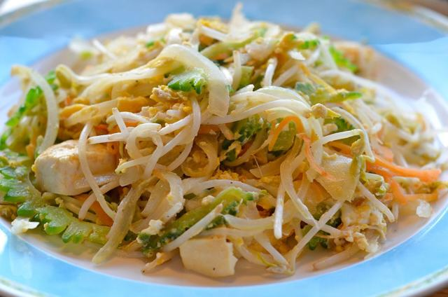
ステーキ
米軍文化から根づいた「夜の締めはステーキ」。
◎ ジャッキーステーキハウス（西町）1953年・テンダーロイン Day3
○ ステーキハウス88Jr. 松山店 深夜〜翌5時・1,000円〜 Day0
○ キャプテンズイン 国際通り店 鉄板パフォーマンス・無休
○ ステーキハウス88Jr. 松山店 深夜〜翌5時・1,000円〜 Day0
○ キャプテンズイン 国際通り店 鉄板パフォーマンス・無休
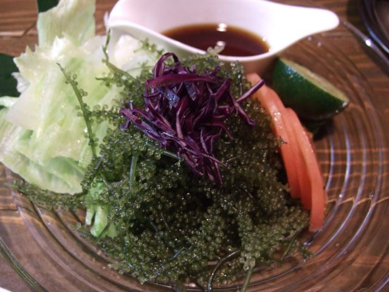
ハンバーガー（アメリカン）
米軍ゆかりの炭火バーガー。
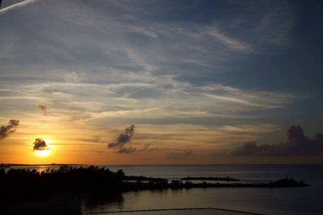
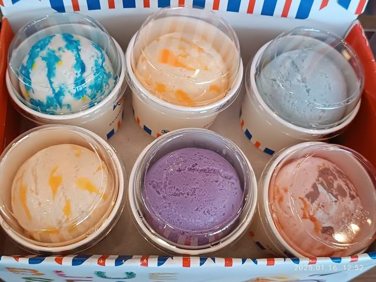
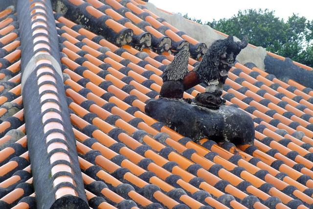
紅いもタルト・ちんすこう
お土産の二大定番。発祥の店で買う。
泡盛・古酒（クース）
3年以上寝かせた古酒は香りが別物。
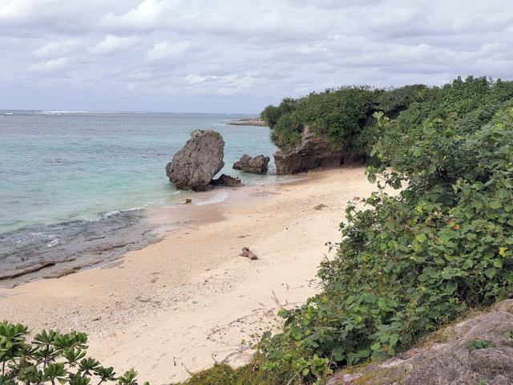
海カフェ・南国フルーツ
海を見ながらのコーヒーと、パイン・シークヮーサー。
店から選ぶ
旅程に入っている店＋代替。タグは ◎最高／○食べられる。名物で絞り込めますきしもと食堂 本店 Day1
◎ 本部そば ◎ ソーキ ○ じゅーしー
11:00〜17:00 売切終了｜水休｜予約不可・開店前に並ぶ｜¥800〜
首里そば 本店 Day2
◎ 沖縄そば ○ 煮つけ
11:30〜14:00 売切終了｜木・日休｜予約不可｜¥650〜
山原そば
◎ てびちそば ◎ ソーキそば
11:30〜売切｜月・火休（Day1日曜のみ可）
田舎 公設市場南店
◎ ソーキそば ¥500
10:00〜18:30頃｜無休（要確認）
しむじょう
◎ 沖縄そば（1日100食）
11:00〜15:00 売切｜火・水休
高江洲そば
◎ ゆし豆腐そば（元祖）
10:00〜18:00｜日休
ジャッキーステーキハウス Day3
◎ テンダーロイン ○ タコス
11:00〜22:30（LO22:00）｜第2・第4水休｜予約不可｜¥3,000前後
ステーキハウス88Jr. 松山店 Day0
○ 1,000円ステーキ（深夜の締め）
月〜木18:00〜翌3:00／金土〜翌5:00｜日休｜☎098-869-7888
キャプテンズイン 国際通り店
○ 鉄板焼きステーキ（目の前で調理）
11:30〜17:00／17:00〜22:30｜無休｜ネット予約可
焼肉もとぶ牧場 もとぶ店 Day1 要予約
◎ もとぶ牛（上カルビ・イチボ・にぎり）
11:00〜15:00／17:00〜22:00｜無休｜☎0980-51-6777｜¥5,000〜7,000/人
やんばる島豚あぐー 炭火焼 ぶうや
◎ あぐー炭火焼 ◎ あぐーしゃぶ（2日前予約）
17:00〜23:00｜定休 要確認
アグーとんかつ コション 浮島通り店
◎ あぐーとんかつ
要確認（行列あり）
琉球料理 美榮 Day2 要予約
◎ 琉球宮廷料理コース ○ 古酒
18:00〜22:00｜日休・不定休｜☎098-867-1356｜9品¥7,000／11品¥9,000／13品¥12,000
古酒と琉球料理 うりずん
◎ ドゥル天 ◎ 古酒 ○ ラフテー ○ 海ぶどう ○ ジーマーミ豆腐
17:30〜24:00｜無休｜ホットペッパー予約可｜☎098-885-2178
ゆうなんぎい
◎ ラフテー ◎ ゴーヤーチャンプルー ○ ミミガー
12:00〜15:00／17:30〜22:30｜日休｜予約不可
郷土料理 琉音
◎ 琉球家庭料理（山本彩香の後継）
17:00〜22:00（最終入店19:00）｜水・日休｜要確認・要予約
抱瓶 那覇久茂地店
○ 沖縄料理全般 ○ あぐー ○ 泡盛
17:00〜翌1:00（金土〜翌2:00）｜無休
泊いゆまち Day2 朝
◎ まぐろ丼 ◎ 海ぶどう ○ 生もずく ○ 刺身
6:00〜18:00｜施設無休｜¥1,000前後
魚まる 小禄本店
◎ 海鮮丼（魚屋直営）
11:00〜21:00｜不定休（要確認）
糸満漁民食堂
◎ 県産魚のバター焼き ○ 刺身定食
11:30〜15:00／18:00〜22:00｜火休
中本鮮魚てんぷら店 Day2
◎ 魚天・イカ天・もずく天
10:30〜18:00頃｜木休｜1個¥100前後
キングタコス 金武本店 Day3
◎ タコライスチーズ野菜 ○ タコス
平日11:30〜翌5:00／土日祝10:30〜｜無休｜¥700前後
GORDIE'S
◎ 炭火焼バーガー
11:00〜20:00頃｜不定休｜予約不可
キャプテンカンガルー
◎ 極厚パティのバーガー
11:00〜21:00｜不定休｜行列
ポーたま 牧志市場本店 Day3 朝
◎ ポーク玉子おにぎり（油みそ・ゴーヤ天）
7:00〜20:00｜無休｜空港到着ロビー店 7:00〜21:00
C&C BREAKFAST OKINAWA
○ フルーツパンケーキ ○ アサイーボウル
9:00〜15:00（土日祝8:00〜）｜火休（10/27不可）
三矢本舗（道の駅許田） Day1 朝
◎ 揚げたてサーターアンダギー ○ 沖縄天ぷら ○ カットパイン
道の駅 8:30〜19:00
新垣ぜんざい屋 Day1
◎ 氷ぜんざい ¥300（メニューはこれだけ）
12:00〜18:00｜月休
富士家 泊本店
◎ 沖縄ぜんざい
11:00〜19:00（10〜5月）｜無休
浜辺の茶屋 Day2
◎ 窓席のコーヒー ○ 自家製ケーキ
10:00〜20:00（月は14:00〜）｜無休
ブルーシール 北谷本店 Day3
◎ 紅イモ ○ 塩ちんすこう ○ シークヮーサー
〜22:00前後｜無休
御菓子御殿 恩納村本店／国際通り松尾店 Day3
◎ 元祖紅いもタルト（本店は製造見学つき）
9:00〜（本店は〜18:00・国際通り店〜22:00目安）｜無休
泡盛倉庫
◎ 泡盛 800種
月〜土18:00〜24:00｜日休
カラカラとちぶぐゎ〜
◎ 古酒の飲み比べ ○ 琉球料理
18:00〜24:00｜日休
A&W 那覇空港店
◎ ルートビア ○ カーリーフライ
7:00頃〜20:00｜無休
📞 予約が要る店
| 店 | 日時 | 方法 | いつまでに |
|---|---|---|---|
| 琉球料理 美榮 | 10/26(月) 19:30 2名 | ☎098-867-1356 | 10/10まで（取れなければ うりずん をホットペッパーで） |
| 焼肉もとぶ牧場 もとぶ店 | 10/25(日) 18:40 2名 | ネット予約 or ☎0980-51-6777 | 10/15まで |
| ぶうや（あぐーしゃぶ・入れる場合） | — | 2日前まで電話 | 任意 |
🗺スポット
行く場所（◎旅程IN）と、時間があれば足す場所（○）。営業時間・料金は2026-09-11時点の公式情報。
北部
Day1｜那覇から高速で1.5〜2時間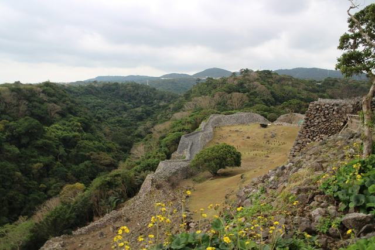
◎ 沖縄美ら海水族館
ジンベエザメ3匹が泳ぐ「黒潮の海」。給餌解説は15:00と17:00。
8:30〜18:30（入館〜17:30）｜¥2,180（道の駅許田の前売券が安い）｜3時間
◎ 古宇利大橋・古宇利島
海の上を2km走る橋。橋の南詰のビーチから夕日。ハートロックは干潮時。
常時｜無料（ハートロックP ¥300〜）｜1時間
◎ 万座毛
象の鼻の断崖。朝イチが人が少ない。
8:00〜20:00｜無料・P無料｜30分
◎ 備瀬のフクギ並木
防風林の並木道を海まで歩く。午前の光が一番きれい。
常時｜P ¥500前後｜40分
◎ 今帰仁城跡（世界遺産）
曲線の石垣と海の眺め。
8:00〜18:00｜¥1,000｜45分
○ 瀬底ビーチ
本島屈指の透明度。海に入るならここ。
9:00〜17:00（10月下旬まで）｜P ¥1,000｜1時間〜
○ ブセナ海中公園
雨でも魚が見られる海中展望塔。
9:00〜18:00｜展望塔¥1,050／ボート¥1,560｜30分
○ 大石林山・辺戸岬
本島最北端の奇岩と岬。今回は遠すぎるので次回向き。
大石林山 9:30〜17:30 ¥1,200｜那覇から2時間半
那覇・南部
Day2｜那覇から車で15〜45分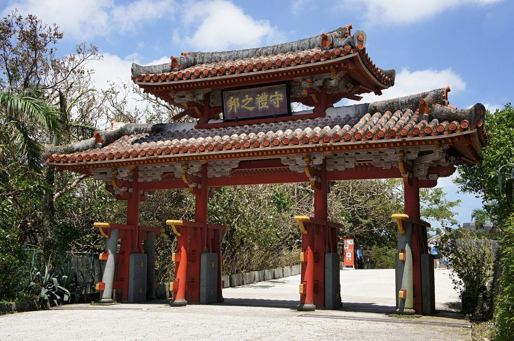
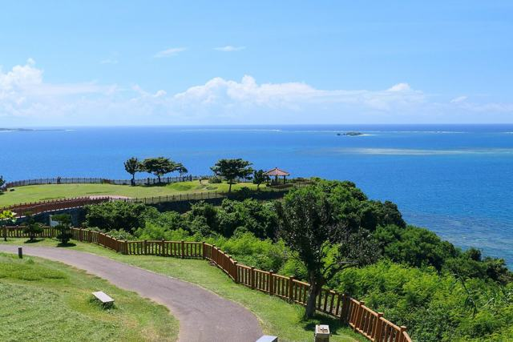
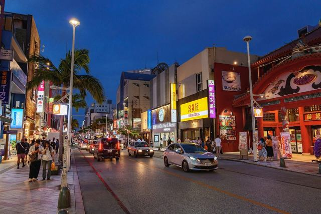
◎ 首里城公園（世界遺産）
守礼門から復元なった正殿の外観へ。東のアザナから那覇一望。正殿内部は11/23公開。
8:00〜19:00｜有料区域 ¥600｜1.5時間
◎ 斎場御嶽（世界遺産）
琉球最高の聖地。三角岩「三庫理」の先に久高島。
9:00〜18:00（販売〜17:15）｜¥600・南城市地域物産館で購入｜1時間
◎ 瀬長島ウミカジテラス
滑走路の延長線上。夕日と頭上の着陸機、白い階段の街。
10:00〜21:00｜無料・P無料｜1時間
◎ 知念岬公園・ニライカナイ橋
270度の海と久高島。橋は上の展望台から見下ろす。
常時｜無料（橋はPなし）｜30分
◎ 奥武島
天ぷらと猫の小島。橋を渡って5分。
常時｜無料｜30分
○ 玉陵・金城町石畳道
王家の墓と、王国時代の石畳。首里城とセット。
玉陵 ¥300｜石畳は常時無料｜計40分
○ 国際通り・壺屋やちむん通り・公設市場
夜さんぽと土産。市場は10/25（第4日曜）休。
市場 8:00〜22:00｜徒歩10分
○ 波の上ビーチ・波上宮
ホテルから徒歩7分。朝の散歩に。
常時｜無料｜20分
○ ガンガラーの谷
太古の森をガイドと歩く。予約制。
10/12/14/16時発｜¥2,500｜80分
○ 琉球温泉 龍神の湯（瀬長島）
海と夕日を見ながら温泉。最終日の締めにも。
6:00〜24:00｜¥2,000｜1.5時間
○ おきなわワールド・玉泉洞
雨の日の切り札。鍾乳洞は年中快適。
9:00〜17:30｜¥2,000｜2時間
中部
Day3｜那覇から車で30〜70分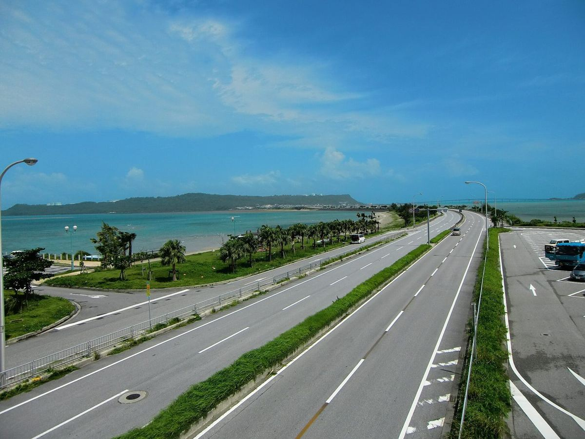
◎ 海中道路・浜比嘉島
両側が海の4.7km。浜比嘉島は琉球開闢の神話の島、赤瓦の集落。
常時｜無料（あやはし館P300台）｜1.5時間
◎ 中城城跡（世界遺産）
ペリーも絶賛したアーチ門。東西に海。
8:30〜17:00｜¥400｜45分
◎ 美浜アメリカンビレッジ・サンセットビーチ
米軍文化の街。ブルーシール本店、ボードウォーク、ハロウィン装飾。
店ごと（〜22時台）｜無料｜1.5時間
○ 果報バンタ・ぬちまーす
宮城島の絶景の崖と、海塩の工場見学。海中道路から20分。
工場 9:00〜17:30｜無料｜40分
○ 読谷 やちむんの里・残波岬
登り窯と工房で器を選ぶ。残波岬は白い灯台と断崖。
工房 9:30〜17:30（火休あり）｜灯台¥300｜計1時間
○ 真栄田岬・青の洞窟
シュノーケルツアーは通年。10月は水温25〜27℃。
ツアー ¥3,000〜5,800｜2.5時間
○ 港川外人住宅
米軍住宅を改装したカフェと雑貨の街。雨の日向き。
店ごと｜那覇から20分｜1時間
○ 勝連城跡（世界遺産）
海中道路の帰りに。丘の上の城壁。
9:00〜18:00｜¥600｜45分
体験
ふたりで1つ入れるなら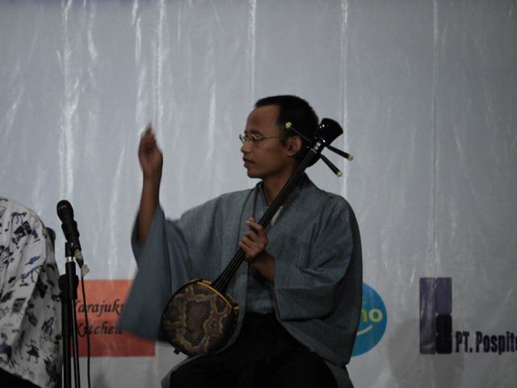
三線体験
ナビィ三線（国際通り）30分¥2,000。夜さんぽの途中に。
琉球ガラス
琉球ガラス村（糸満）40分 ¥4,300〜。作品は後日配送。
やちむん・シーサー
読谷やちむんの里の工房で器選び、または壺屋でシーサー色付け。
サンセットクルーズ
北谷港発 約1時間 ¥4,800〜。Day3の夕方を海の上にする案。
🌅 夕日・海・季節
日の出・日の入り
10/25 6:35／17:53、10/27 17:51。夕日は17:20に現地着。
夕日の場所
Day1 古宇利大橋／Day2 瀬長島（着陸機と）／代替：万座毛・残波岬・サンセットビーチ。
海に入れるか
水温25〜27℃で可。エメラルドビーチ〜10/31、サンセットビーチ〜11/30。北風の日は波あり。
気候・服装
最高27〜28℃／最低22〜23℃。半袖＋薄手の羽織り、日差し対策、折りたたみ傘。
イベント
沖縄の産業まつり（奥武山公園・10/23〜25 or 24〜26、要確認）。首里城祭は11/1〜3で重ならず。
🚗移動・宿
航空券は未予約。「移動は安く」を優先しつつ、到着夜と最終日の動きが崩れない便を推奨します。価格は2026-09-11時点の比較サイト表示（片道・最安）。
推奨：往路 ANA NH479（羽田 20:15 → 那覇 22:50）¥15,353 ／ 復路 ANA NH478（那覇 20:55 → 羽田 23:10）¥14,680。往復2名 ¥60,066。
同じ値段で1時間早い NH1097（16:50発）もあるが、仕事終わりに間に合うのは20:15発。復路は冬ダイヤで20:55発（保安検査20:35まで）。
同じ値段で1時間早い NH1097（16:50発）もあるが、仕事終わりに間に合うのは20:15発。復路は冬ダイヤで20:55発（保安検査20:35まで）。
手荷物のルール：ANA・JAL・スカイマーク・ソラシドは機内持込 10kg・1個＋身の回り品。Peach・Jetstarは7kgまで（超えると空港で¥3,000前後の追加）。3泊で7kgは詰め方次第なので、LCCにするなら重さを測ってから。
10/24(土) 東京 → 那覇
15時以降の全便。★＝候補| 便 | 会社 | 出発 → 到着 | 価格 | メモ |
|---|---|---|---|---|
| ANA1095 | ANA（ソラシド運航） | 羽田 16:05 → 18:45 | ¥17,209 | |
| ANA1097 ★ | ANA（ソラシド運航） | 羽田 16:50 → 19:30 | ¥15,353 | 推奨便と同額で早く着く。仕事を早く上がれるなら |
| JAL923 | JAL | 羽田 16:55 → 19:35 | ¥21,209 | |
| SKY521 | スカイマーク | 羽田 17:05 → 19:50 | ¥17,992 | |
| SKY523 | スカイマーク | 羽田 18:25 → 21:05 | ¥17,970 | |
| SNA025 ★ | ソラシドエア | 羽田 19:10 → 21:55 | ¥15,469 | 21:55着なら夜が楽。レンタカー時間外料金は同じ |
| ANA2425 | ANA（ソラシド運航・同じ機体） | 羽田 19:10 → 21:55 | ¥23,088 | SNA025と同じ飛行機。ANA便名だと高い |
| JAL925 | JAL | 羽田 20:05 → 22:35 | ¥21,209 | |
| ANA479 ★ 推奨 | ANA | 羽田 20:15 → 22:50 | ¥15,353 | 夜便で最安。ABC時間外受取（〜23:30着）に間に合う |
| ANA1133 | ANA（ソラシド運航） | 羽田 20:35 → 23:20 | ¥15,828 | 23:20着は遅すぎる（ゆいレール終電23:30・ABC受取ぎりぎり） |
| JJP331 | Jetstar | 成田 15:50 → 19:00 | ¥13,270 | 成田までの交通 ¥1,300〜3,250・60〜90分が別途 |
| MM511 | Peach | 成田 16:10 → 19:20 | ¥13,054 | 同上 |
| JJP339 ★ | Jetstar | 成田 19:05 → 22:10 | ¥12,270 | 成田夜便。都心18時発の京成で間に合う。手荷物7kg |
10/27(火) 那覇 → 東京
16時以降の全便。★＝候補| 便 | 会社 | 出発 → 到着 | 価格 | メモ |
|---|---|---|---|---|
| SKY518 | スカイマーク | 那覇 16:45 → 羽田 19:00 | ¥18,920 | |
| ANA472 | ANA | 那覇 16:55 → 羽田 19:15 | ¥28,732 | |
| JAL916 | JAL | 那覇 18:00 → 羽田 20:15 | ¥29,660 | |
| ANA474 | ANA | 那覇 18:35 → 羽田 20:50 | ¥28,218 | |
| JAL918 | JAL | 那覇 18:50 → 羽田 21:00 | ¥29,660 | |
| ANA476 | ANA | 那覇 19:10 → 羽田 21:25 | ¥16,797 | |
| JAL920 | JAL | 那覇 19:45 → 羽田 22:00 | ¥25,003 | |
| ANA1096 | ANA（ソラシド運航） | 那覇 20:00 → 羽田 22:15 | ¥14,803 | |
| SNA026 ★ | ソラシドエア | 那覇 20:25 → 羽田 22:35 | ¥13,565 | 推奨便より¥1,115安く、30分早く着く |
| ANA2426 | ANA（ソラシド運航・同じ機体） | 那覇 20:25 → 羽田 22:35 | ¥14,056 | SNA026と同じ飛行機 |
| ANA1098 ★ 最安 | ANA（ソラシド運航） | 那覇 20:45 → 羽田 23:00 | ¥13,222 | 羽田行きで最安。ANAマイルも付く |
| SKY522 | スカイマーク | 那覇 20:45 → 羽田 22:55 | ¥14,726 | |
| JAL922 | JAL | 那覇 20:50 → 羽田 23:05 | ¥25,003 | |
| ANA478 ★ 推奨 | ANA | 那覇 20:55 → 羽田 23:10 | ¥14,680 | ANA自社機材。冬ダイヤで20:55発 |
| ANA1134 | ANA（ソラシド運航） | 那覇 21:10 → 羽田 23:25 | ¥14,680 | |
| MM508 | Peach | 那覇 18:30 → 成田 21:00 | ¥12,842 | 成田から都心へ ¥1,300〜3,250・60〜90分 |
| JJP336 ★ | Jetstar | 那覇 20:05 → 成田 22:25 | ¥12,270 | 成田夜便。都心着は24時前後。手荷物7kg |
往復の組み合わせ（2名）
価格は上の表の合計。成田便は交通費（京成本線 ¥1,300前後×往復×2名）を加算| 案 | 往路 | 復路 | 2名合計 | 評価 |
|---|---|---|---|---|
| A 推奨 | ANA479 20:15→22:50 | ANA478 20:55→23:10 | ¥60,066 | 羽田・ANA自社便・手荷物10kg。旅程どおり |
| B 羽田で最安 | ANA479 20:15→22:50 | ANA1098 20:45→23:00 | ¥57,150 | 復路がソラシド機材になるだけ。Aより¥2,916安い |
| C ソラシド往復 | SNA025 19:10→21:55 | SNA026 20:25→22:35 | ¥58,068 | 往路が1時間早く着いて夜が楽。ANAマイルなし |
| D 成田LCC | JJP339 19:05→22:10 | JJP336 20:05→22:25 | ¥49,080＋交通 約¥5,200＝¥54,280 | Aより約¥5,800安いが、成田往復で＋2〜3時間、手荷物7kg制限、遅延時の振替が弱い |
10/25からANAは冬ダイヤ。上の表は冬ダイヤの時刻。価格は日々動くので、決めたらその場で予約。
🚗 レンタカー 推奨：ABCレンタカー 那覇空港営業所
10/24 23:00 時間外受取 → 10/27 18:00 返却（3日）。ABCは営業時間外（20:00〜23:30着便）でも事前予約で受取可、時間外料金¥3,300。送迎8分。返却は出発90分前まで。コンパクト（ヤリス級）免責込み日帰り¥5,900〜6,450 → 3日で¥18,000前後＋NOC¥550/日＋時間外¥3,300。ETCカード貸出あり。
案A：到着夜に受取（推奨）
22:50着 → 23:05送迎 → 23:35ホテル。翌朝7:00にそのまま北部へ。+¥3,300で朝の1時間と体力を買う。
案B：翌朝 空港で受取
到着夜はゆいレール（¥270×2）。翌朝ゆいレールで空港へ戻り8:00受取。¥3,300節約、北部出発が8:30になる。
案C：翌朝 市内店で受取
ニッポンレンタカー県庁前店（8:00〜・徒歩9分）など。空港返却の乗り捨て料は要確認。
| 会社 | 深夜受取 | 備考 |
|---|---|---|
| ABCレンタカー | 〜23:30着便 ＋¥3,300 | 口コミ4.3/141件（沖楽） |
| オリックス沖縄 | 19〜23時着便限定「深夜便プラン」 | 免責込み・ETC標準。料金は予約サイトで |
| ドドンパRenta | 〜23:30 ＋¥1,100 | 格安系 |
| 24レンタカー 豊見城店 | 24時間無人 | 免許証＋クレカで可 |
| OTS・トヨタ・ニッポン・タイムズ | 原則不可（〜19〜20時） | ニッポンは2022年に深夜対応を終了 |
高速：那覇IC→許田IC ETC ¥1,040（約40分）、那覇→屋嘉 ¥800前後。3日間の高速合計¥3,000以内。ガソリン約20L・¥3,500。返却前に豊見城のスタンドで満タン。
🏨 宿：スマイルホテル那覇シティリゾート 予約済
予約内容（楽天トラベル）
10/24(土)〜10/27(火) 3泊・大人2名・スタンダードダブル（禁煙・140cm・16㎡）・素泊り。
支払済 ¥18,024（クーポン適用後）。予約番号 REDACTED-RESERVATION。
無料キャンセルは 10/22(木) 23:59まで。
支払済 ¥18,024（クーポン適用後）。予約番号 REDACTED-RESERVATION。
無料キャンセルは 10/22(木) 23:59まで。
やること
☎098-869-2511 に「10/24は23:30頃到着」と連絡（到着予定15:00で登録されているため）。駐車場利用の旨も伝える。
基本
久米2-32-1。県庁前駅 徒歩9分、国際通り 徒歩10分、波の上ビーチ 徒歩7分、空港から車10分。駐車86台 ¥1,000/泊 先着。Wi-Fi・コインランドリー。朝食（¥2,300）は今回使わない。
🛣 沖縄の運転メモ
- 国道58号・330号の那覇市内は平日7:30〜9:00／17:30〜19:00がバスレーン（左端車線はバス専用）。Day2朝・Day3夕方が該当
- 那覇市内の朝夕は本州の都市部並みに混む。Day3の北谷→那覇は45分見ておく
- 飲酒運転の検問が多い。飲む日は飲まない方が運転、または車を置いて徒歩・タクシー
- 雨の日は路面が滑る（サンゴ砂）。10/25(日)12〜18時は国際通りが歩行者天国
- ゆいレール：那覇空港駅 最終23:30。空港→県庁前 約13分 ¥270。タクシー 空港→久米 約15分 ¥1,800前後
📋予約・持ち物
上から順に片づけると旅程が固まります。
📝 予約チェックリスト
- ホテル：スマイルホテル那覇シティリゾート 10/24〜27（楽天・¥18,024・REDACTED-RESERVATION） 9/9 予約済み
- ホテルへ電話：☎098-869-2511「10/24は23:30頃到着」 航空券確定後
- 航空券：ANA479（10/24 20:15）／ANA478（10/27 20:55）2名・預け荷物なし 「移動・宿」の便リストから選んで、その場で予約（価格は日々動く）
- レンタカー：ABCレンタカー那覇空港 10/24 23:00受取（時間外・便名を伝える）〜10/27 18:00返却、コンパクト、免責＋NOC、ETCカード 航空券確定後すぐ
- 美榮：10/26(月) 19:30 2名 ☎098-867-1356 10/10まで。取れなければ うりずん
- 焼肉もとぶ牧場 もとぶ店：10/25(日) 18:40 2名 ☎0980-51-6777 or ネット 10/15まで
- 青の洞窟ツアー（彼女の希望を聞いてから） 10/20まで
- 出発1週間前：各店の臨時休業を電話確認／産業まつりの日程／天気と台風
🎒 持ち物
必須
免許証（運転する人全員）・クレカ・保険証・充電器＆車載ケーブル・モバイルバッテリー・折りたたみ傘
服装
半袖＋薄手の長袖（朝晩・水族館の冷房）・歩きやすい靴（斎場御嶽・城跡は石段）・帽子・サングラス・日焼け止め
海・水辺
水着・ラッシュガード・速乾タオル・マリンシューズ・防水スマホケース・ビーチサンダル
あると良い
虫よけ（北部）・ウェットティッシュ（天ぷら・タコライス）・エコバッグ・保冷バッグ
🎁 お土産（買う場所を決めておく）
| 品 | どこで | いつ |
|---|---|---|
| 紅いもタルト（御菓子御殿） | 恩納村本店／空港 | Day3 |
| ちんすこう（新垣ちんすこう本舗） | 国際通り／空港 | Day3空港 |
| サーターアンダギー | 三矢本舗（道の駅許田） | Day1朝（日持ち3日） |
| やちむん（器） | 読谷やちむんの里／壺屋 | Day3昼 |
| 泡盛・古酒 | 飲んで気に入った銘柄を空港で | Day3空港 |
| 海ぶどう・もずく | 空港（保冷） | Day3空港 |
💴予算
ホテルは実額。ほかは2026-09-11時点の目安（2名合計）で、決まり次第差し替えます。
¥60,066
航空券（ANA往復2名・9/12表示）
¥34,000
車・高速・燃料・駐車（目安）
¥18,024
ホテル3泊（実額）
¥67,000
食事・入場（目安）
| 項目 | 内訳 | 金額（2名） | 状態 |
|---|---|---|---|
| 航空券 | ANA479 ¥15,353 ＋ ANA478 ¥14,680 ×2名（9/12 トラベルコ表示） | ¥60,066 | 目安（未予約） |
| レンタカー | ABC コンパクト3日（免責込）＋NOC ¥550×3＋時間外 ¥3,300 | ¥23,000 | 目安 |
| 高速・燃料・駐車 | 高速 ¥3,000／ガソリン ¥3,500／ホテルP ¥3,000／観光P ¥1,500 | ¥11,000 | 目安 |
| ホテル | スマイルホテル那覇シティリゾート ダブル3泊 素泊り（楽天・クーポン後） | ¥18,024 | 支払済 |
| 入場料 | 美ら海 ¥2,180／今帰仁 ¥1,000／首里城 ¥600／玉陵 ¥300／斎場御嶽 ¥600／中城 ¥400 ×2名 | ¥10,200 | 目安 |
| 食事 | Day0 88Jr ¥4,000／Day1 許田¥1,500・きしもと¥2,000・ぜんざい¥600・もとぶ牧場¥13,000／Day2 いゆまち¥2,500・首里そば¥1,600・天ぷら¥800・浜辺の茶屋¥2,000・美榮¥18,000／Day3 ポーたま¥1,000・キングタコス¥1,600・ブルーシール¥1,000・ジャッキー¥7,000 | ¥56,600 | 目安 |
| お土産・雑費 | — | ¥10,000 | 目安 |
| 合計 | 約¥189,000 |
安くするなら：①復路をANA1098（−¥2,916）か成田LCC往復（−¥5,800・成田往復の時間と7kg制限つき）②美榮を うりずん に（−¥10,000）③レンタカーを案Bに（−¥3,300）。